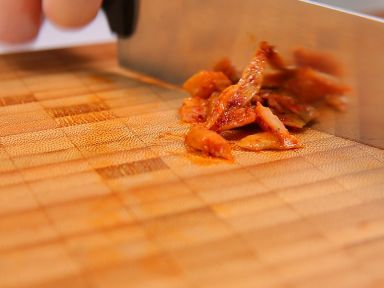
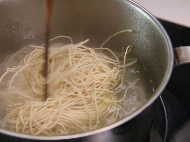
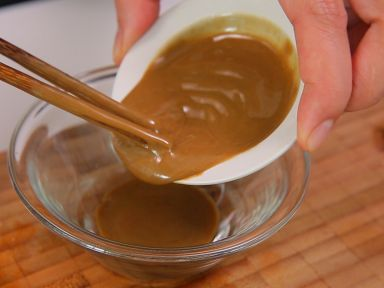
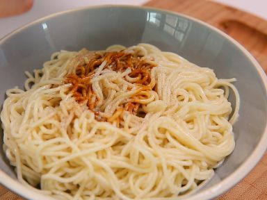
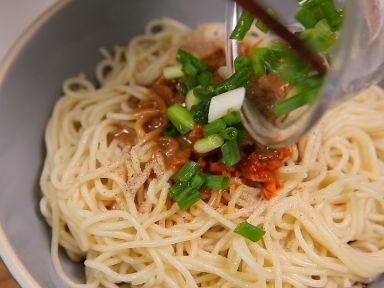

調理時間：10分
材料（１人前）
| 材料 | 分量 |
|---|---|
| 中華麺 | 150g |
| ザーサイ | 30g |
| 小ネギ | 10g |
| 芝麻醤 | 大さじ２ |
| 醤油 | 大さじ２ |
| ラー油 | 小さじ１ |
| 酢 | 小さじ１ |
| ごま油 | 大さじ１ |
| 塩 | 適量 |
| 胡椒 | 適量 |
作り方

STEP 1
ネギとザーサイをみじん切りにします。

STEP 2
中華麺を茹でます。表示より１分ほど短く茹でると美味しく出来上がります。
茹で上がったらザルにあげてよく水気を切り、ごま油を絡めておきます。

STEP 3
芝麻醤と醤油、辣油、酢を加えてよく混ぜ合わせます。

STEP 4
中華麺を皿に盛り、[4]のソースを混ぜ合わせます。

STEP 5
ネギとザーサイを盛り付け完成です。お好みで塩胡椒で味を調整してください。